明日香村 食べるマップ
ご利用案内
明日香村内のグルメ・お食事処・カフェの一覧です。散策、サイクリング、観光の際にご利用ください。
※各カードをクリックすると、上のマップが該当店舗の位置に移動します。最新の営業日時等は各店舗にご確認ください。
ランチ・ディナー
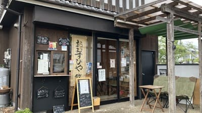
1 おむすびや〜悠〜
明日香村産のお米を使った、つくりたてのおむすびを楽しめるお店。白米・古代米・自然栽培玄米から選べ、素材にもこだわったおむすびやお弁当を味わえます。
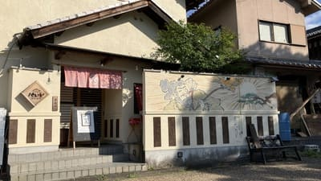
2 飛鳥白帯 食彩酒音 パレット
農園で育てた有機野菜を使い、無添加・無農薬に挑戦するお店。大和肉鶏を使ったパレット定食をはじめ、グルテンフリーの料理も楽しめます。
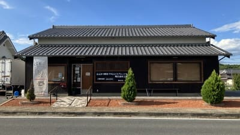
3 とんかつ喫茶ブタとエスプレッソと
こだわりサクサクのとんかつと本格的なエスプレッソコーヒーを味わえる個性派ショップです。
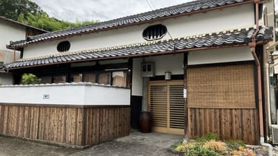
4 味付焼肉猿石
地元で愛される焼肉店。秘伝のタレに漬け込んだ味わい深いお肉が堪能でき、飛鳥駅から徒歩圏内です。
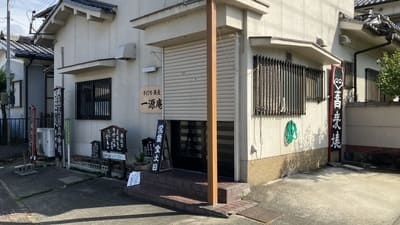
5 一源庵
自家製の手打ち蕎麦を中心に、明日香散策の昼食にぴったりの一軒です。
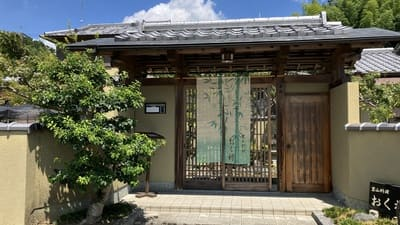
6 里山料理 おく村
（※要予約）きれいなお庭を眺めながら、明日香の旬の素材を使った京風懐石弁当を楽しめる食事処。15品ほどの料理をゆったり味わえます。
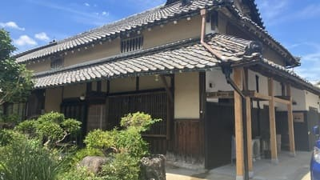
7 マクロビオティックごはんcafeめぐる
玄米や無農薬野菜を中心に使用した体に優しいマクロビオティック料理がいただけます。
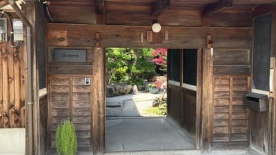
8 ダ テッラ (Da terra)
自家農園の無農薬野菜や地場食材を活かしたこだわりのイタリアンコース料理を提供しています。
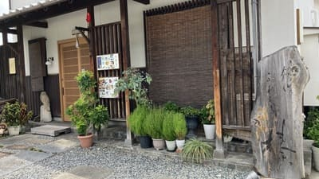
9 創作ふれんち榛
地元の新鮮野菜とシェフの技が光る、上質で気軽に楽しめる創作フランス料理レストランです。
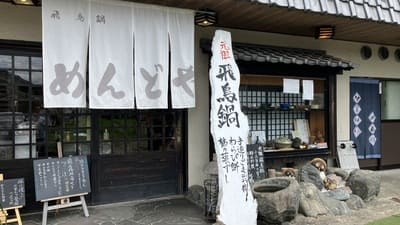
10 めんどや
明日香村で100年以上続く老舗のお食事処。飛鳥鍋やにゅうめんなど、奈良・明日香に伝わる郷土料理を味わえます。
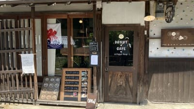
11 ココロゴハン
玄米と旬の野菜を使った、からだにやさしいランチが楽しめるお店。手作りドーナツも魅力のひとつです。
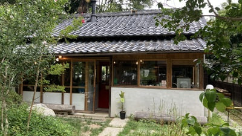
12 さくらバーガー X 明日香スタンド
ジ奈良発のさくらバーガーを明日香で楽しめる、ジューシーな自家製クラフトハンバーガーとドリンクを楽しめる人気店です。
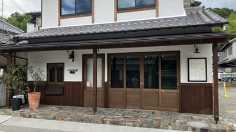
13 明日香村食堂
地元の美味しい食材を使用したボリュームたっぷりの定食や軽食がいただける和風食堂です。
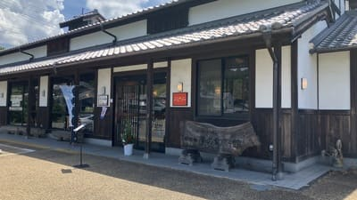
14 レストラン ポカフレール
明日香村産の旬野菜などを使った料理を楽しめるレストラン。古代米のワンプレートランチや手作りデザートも魅力です。
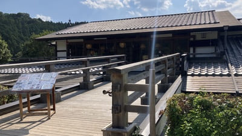
15 農村レストラン 夢市茶屋
石舞台近くのあすか夢販売所2階。明日香村産の米や季節野菜を使った古代米御膳が人気です。
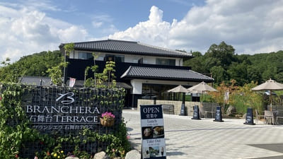
16 ブランシエラ 石舞台テラス
石舞台古墳の近くにある宿泊施設併設のレストラン。大和牛ローストビーフや季節野菜のカレーなどのランチ、明日香散策のお供に楽しめる軽食やデザートのテイクアウトを提供しています。
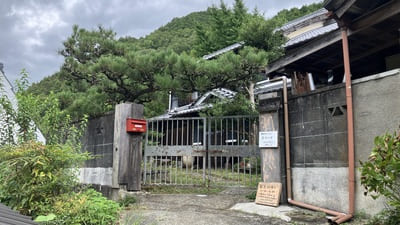
17 奥明日香さらら
（※要予約）改装した古民家で、地元で採れた野菜や山菜を使った「ふるさとの食」を楽しめるお店。ランチのほか、手作りケーキやジュースも味わえます。
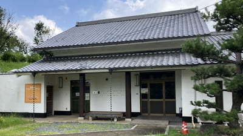
18 明日香ピュアファームキッチン
明日香産の野菜などを使ったピザや季節のスイーツを楽しめるお店。全粒粉の生地に地元野菜をのせたピザが特徴です。
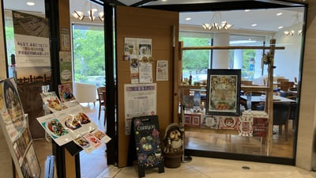
19 Curryon万葉文化館店
奈良県立万葉文化館内にあるカフェレストラン。こだわりのスパイスと明日香の野菜をたっぷり使った明日香野菜カレーなど、地産地消のランチメニューを楽しめます。
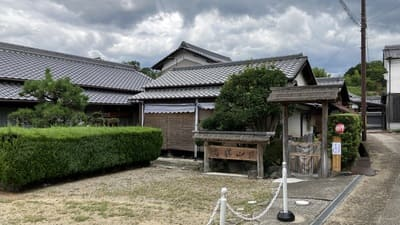
20 山帰来
ご主人自ら毎日打つ十割蕎麦が味わえる蕎麦処。細くなめらかな蕎麦と、桜エビの天ぷらなどを楽しめます。
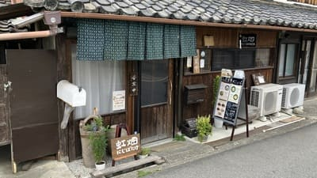
21 虹畑(にじばたけ)
彩り豊かな採れたて野菜を使った手作りランチや体にやさしい和食を提供するお食事処です。
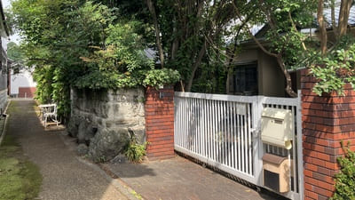
22 あすかの食卓
（※要予約）野菜たっぷりのコース料理が魅力。素材を生かした料理をゆ～っくり楽しみたい方におすすめです。
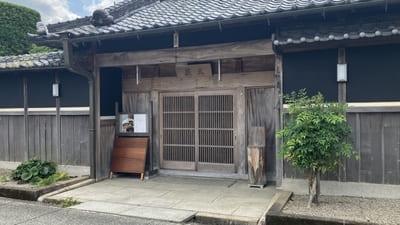
23 萩王
明日香の情緒あふれる雰囲気のなかで本格的な和食や会席料理を楽しめるお食事処です。
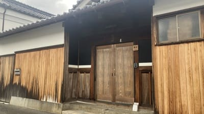
24 あわ乃里
玄米ごはんと旬の野菜料理を提供するお店。化学調味料や砂糖を使わず、昔ながらの製法でつくった調味料を使った料理を楽しめます。
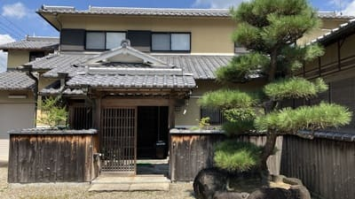
25 い助鮨
（※要予約）隠れ家的な雰囲気の中で、寿司懐石を楽しめるお店。ひとつひとつ丁寧につくられた料理を、個室でゆったりと味わえます。
カフェ・スイーツ
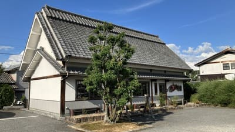
1 珈琲の館 御園
飛鳥駅からすぐの場所で長く親しまれている喫茶店。注文を受けてから淹れるサイフォン珈琲を、落ち着いた店内で味わえます。
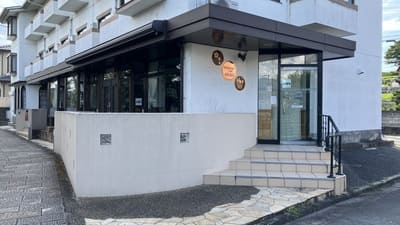
2 カフェ＆ペンション飛鳥
飛鳥駅近くの静かな空間でコーヒーや軽食、スイーツを楽しめるカフェです。
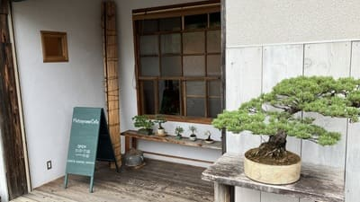
3 Matsuyama Cafe
飛鳥駅近くのオールド木造倉庫を改装した人気カフェ。ワンプレートランチやこだわりのデザート、珈琲が楽しめます。
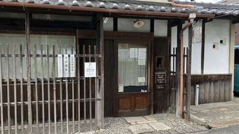
4 さんぽ
古民家を改装した自家焙煎珈琲店。ハンドドリップの珈琲に加え、海南鶏飯などのランチも楽しめます。
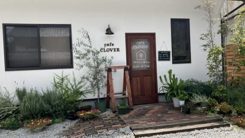
5 cafe CLOVER
ゆっくりとした時間を過ごせる落ち着いたカフェ。自家製ドリンクや手作りスイーツがおすすめ。
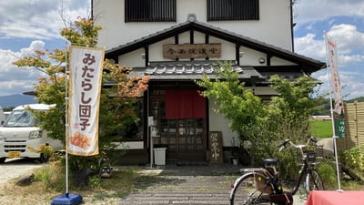
6 今西誠進堂
明日香村の和菓子処。名物の「みたらし団子」や季節のおはぎなど素朴で美味しい和菓子が人気です。
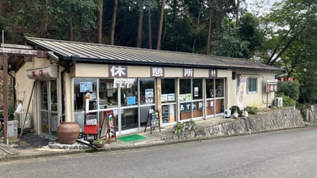
7 あすか野茶屋
岡寺門前でお土産品の販売と軽食を提供する茶屋。ソフトクリームやかき氷、みたらし団子なども販売しており、明日香散策の休憩に立ち寄れます。
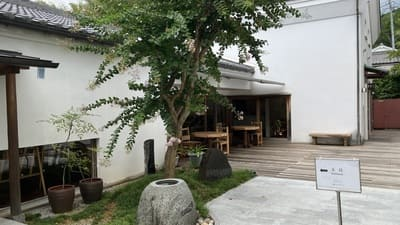
8 Cafe de Manyo!（カフェ ド マンヨウ）
犬養万葉記念館内にあるカフェ。奈良県産の古都麦を使った焼きたてのワッフルや、こだわりのコーヒー、スムージーなどを楽しめます。テイクアウトにも対応しています。
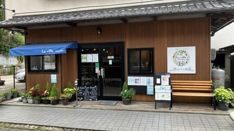
9 La ville ～都～
奈良県産食材を使った手作り料理が魅力のカフェ。ローストビーフ丼や季節のパフェなど、ランチからスイーツまで楽しめます。
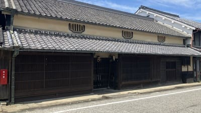
10 茶房 花井屋弥右エ門
江戸中期から続く町家を利用した古民家茶房。里山の恵みを生かしたスパイスカレーや甘味を、趣ある空間で楽しめます。
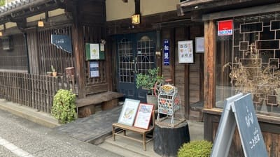
11 caféことだま
築200年ほどの元酒蔵を改装した古民家カフェ。明日香の旬を詰め込んだランチや、季節のパフェ、くるんドーナツなどを楽しめます。
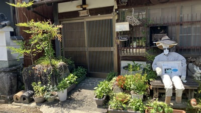
12 アトリエ夢灯り
手作りの灯りやクラフト作品に囲まれたカフェ。ケーキなどの喫茶メニューもあり、散策のひと休みに利用できます。
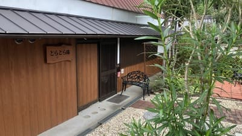
13 花の古民家カフェ どらどら庵
四季の花に囲まれた古民家カフェ。パスタやオムライスなどの食事からパフェやワッフルまで、幅広く楽しめます。
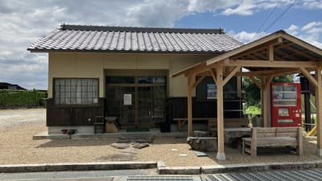
14 cafe-section２
自家製パンを使ったコッペパンサンドなどを楽しめるカフェ。軽食やスイーツを気軽に楽しめます。
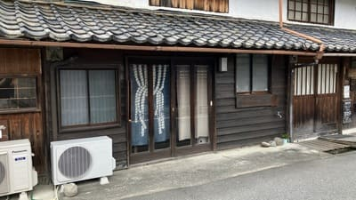
15 古書カフェ『星のコル』
たくさんの古本に囲まれながら、美味しいコーヒーやお茶をゆったり楽しめるブックカフェです。
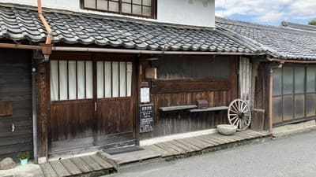
16 ナゾバリ
バリ料理とオーガニックコーヒーを楽しめるカフェ。明日香散策の途中に、ひと味違う食事と休憩を楽しめます。
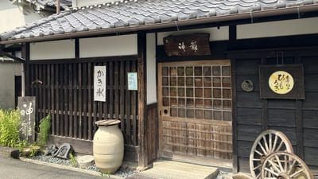
17 暮らしの道具+茶屋 ひもろぎ
築140年の古民家で、明日香の暮らしを感じられるお店。おはぎやかき氷などの甘味と、趣ある古道具を楽しめます。
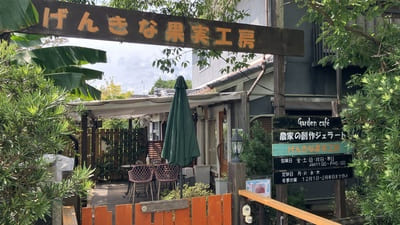
18 げんきな果実工房
明日香村のフレッシュな果物や「あすかルビー」を使ったスムージーや果実スイーツの専門店です。
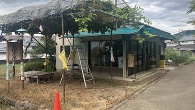
19 甘樫茶屋
甘樫丘の北側にある茶屋。甘樫丘への散策とあわせて立ち寄りやすく、飛鳥の自然を感じながらひと休みできる場所です。
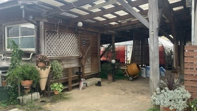
20 Adele アデル
いちご農園「あす花園芸」が運営する季節限定のいちごスイーツ店。採れたての新鮮ないちごを使ったスイーツを楽しめ、ビニールハウス内やガーデンなどでイートインできます。
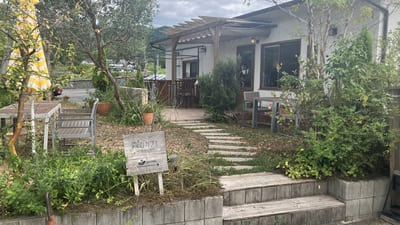
21 森のカフェ
奈良県産の新鮮野菜にこだわった料理と、16種類以上のオリジナルブレンドハーブティーを楽しめるカフェ。人気の養生プレートもおすすめです。
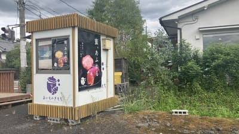
22 おいものきもち
ほくほく・しっとりのおいもスイーツ専門店。焼き芋やスイートポテトが観光のお供に最適です。
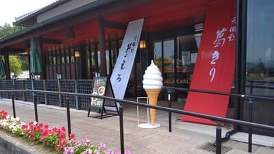
23 飛鳥彩瑠璃の丘 天極堂テラス
吉野本くずの名店「天極堂」の直営テラスカフェ。葛うどんなどの食事から、できたての葛もちや葛きりまで楽しめます。